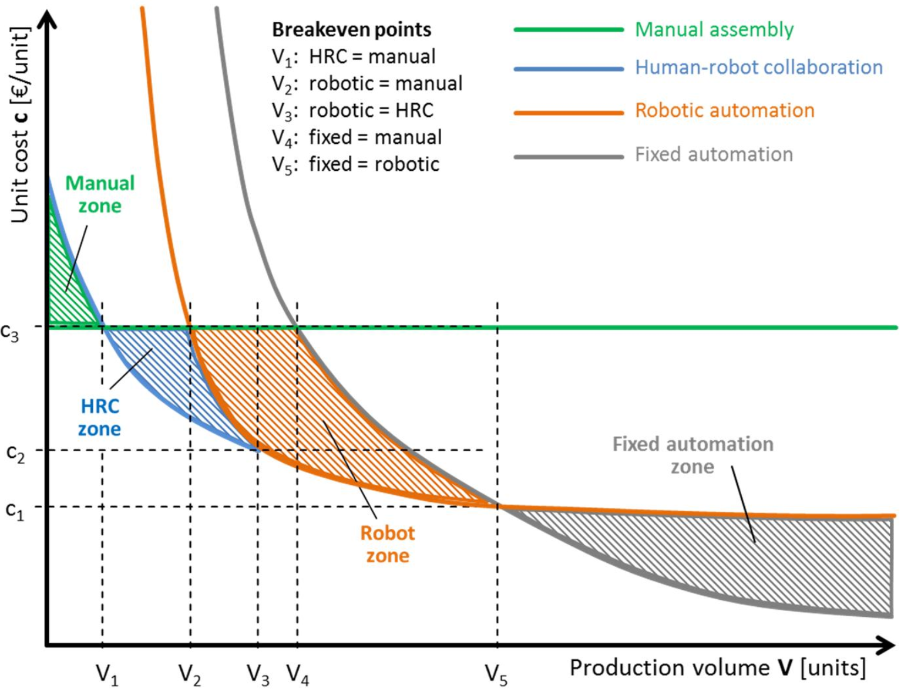

Automation with Robots
What is a robot?
A robot is a goal-oriented machine that can sense, plan, and act (Corke 2023).
This definition is useful because it separates a robot from a simple machine that only repeats one fixed motion. A robot receives information from sensors, uses a controller to decide what motion or action should happen next, and then acts on the physical world through motors, tools, or grippers.
Robots can be divided into two broad categories: mobile robots and manipulators. Mobile robots move through an environment. Examples include autonomous ground vehicles, aerial vehicles, and underwater vehicles. Manipulators are robot arms. They are designed to move a tool, sensor, gripper, or workpiece to a desired position and orientation. In this course, the focus is on manipulators, and especially on industrial robot arms used in manufacturing.
An industrial robot arm can be understood as a programmable multi-axis motion generator. Mechanically, it consists of links connected by joints. Each joint is driven by a motor, often through a gearbox, and the joint positions are measured with sensors such as encoders. The robot controller coordinates all the joints so that the end of the robot follows the desired path. Without this coordination, the robot would only be a collection of motors and metal parts.
This is different from a purpose-built machine, which may also use motors, sensors, and control logic to generate motion and react to its environment. A purpose-built machine is normally designed for a specific process and a limited set of motion paths. A manipulator is deliberately more generic: it is designed to reach as many positions and orientations as possible within its working range, so it can be reused for different tools, products, and tasks.
The robot arm itself is only part of an automation system. To perform useful work, it normally needs an end-effector, such as a gripper, welding torch, painting nozzle, screwdriver, camera, or dispensing tool. The end-effector is what turns the robot’s motion into a production operation.
A complete robot cell includes more than the robot arm. It also needs a way to present parts to the robot and remove them after processing. Depending on the application, the cell may include fixtures, conveyors, feeders, sensors, grippers, safety equipment, a robot controller, and a PLC or other controller that coordinates the full process.
The internal construction of industrial robot axes can be seen in these examples:
When to use a robot?
The decision to use a robot should be based on the task, the production volume, and the expected lifetime of the product. A robot is not automatically the best solution just because a task can be automated. In many cases, manual work, collaborative operation, conventional industrial robots, or fixed automation can all solve the same production problem, but with different investment costs, cycle times, flexibility, and safety requirements.

Figure 1 shows this trade-off in a simplified way. The horizontal axis is the production volume, while the vertical axis is the unit cost. Manual assembly often has a low initial investment, but the cost per produced unit remains high because each unit requires operator time. Robotic automation and fixed automation normally require a larger investment at the beginning, but the unit cost decreases when that investment is distributed over many produced units. The break-even points show where one automation strategy becomes more economical than another.
For low production volumes, manual assembly is often the most practical solution. The cost of designing, purchasing, programming, guarding, and maintaining an automated system may be difficult to justify if only a small number of parts will be produced. Manual work is also useful when the task requires judgement, adaptation, or handling of large product variation.
Human-robot collaboration can be useful when some parts of the task are well suited for automation, while other parts still benefit from human flexibility. For example, the robot may handle repetitive positioning, holding, dispensing, or screwdriving, while the operator performs inspection, preparation, or decision-making. This can reduce ergonomic load and improve consistency without requiring a fully automatic production cell.
A conventional industrial robot is often a good choice when the task is repetitive, the parts can be presented in a predictable way, and the required production volume is large enough to justify the investment. Typical examples include machine tending, palletizing, welding, painting, assembly, dispensing, and pick-and-place operations. Robots are especially useful when the task is dull, dirty, dangerous, ergonomically demanding, or requires repeatable motion and process quality.
Figure 2 illustrates why safety is part of the automation decision, not an add-on after the robot has been installed. Painting and coating processes can expose workers to paint mist, solvents, dust, overspray, and controlled ventilation requirements. Welding can expose workers to arc radiation, hot surfaces, fumes, sparks, and moving machinery. In both cases, the robot can improve repeatability while keeping people farther away from the hazardous part of the process.
Fixed automation is usually preferred for very high production volumes and stable products. Dedicated machines can often achieve shorter cycle times and lower unit costs than robots, but they are less flexible. If the product design, process sequence, or part geometry changes, fixed automation may require major mechanical modifications. A robot will often be slower than a purpose-built machine, but it can be reprogrammed, retooled, and reused more easily.
In practice, a robot is most attractive in the middle region: the volume is too high for manual work to be efficient, but the product or process is not stable enough to justify fully dedicated fixed automation. The final decision should include not only purchase price, but also grippers and fixtures, sensors, PLC and safety integration, programming time, cycle time, maintenance, operator training, floor space, and expected future product changes.
Lean Robotics
TODO: Write about Bouchard (2017) and the Lean Robotics principles, and how they can be used to make better decisions about when to use a robot, and how to design and implement robotic automation in a way that is more efficient, flexible, and sustainable.